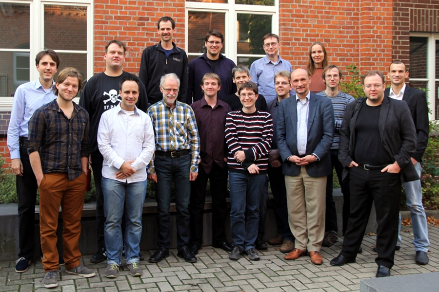

Workshop "Automatische Bewertung von Programmieraufgaben"
(28.10.2013, Uni Hannover, Schloßwenderstr. 5, Raum C101)

Zielsetzung und Themen
Das Ziel des Workshops ist eine fundierte und umfassende Bestandsaufnahme über existierende
Systeme zur automatischen Bewertung von Programmieraufgaben. Der Workshop richtet sich an
TeilnehmerInnen aus Wissenschaft und Praxis, die Systeme zur automatischen Bewertung von
Programmieraufgaben entwickeln, einsetzen oder an deren Einsatz interessiert sind. Im Sinne des
thematischen Schwerpunkts des Workshops sind insbesondere diejenigen TeilnehmerInnen eingeladen,
die Erfahrung mit dem Austausch und der Wiederverwendung von Programmieraufgaben aus technischer,
organisatorischer oder inhaltlicher Sicht haben.
(Der Workshop wird im Rahmen des
eCULT-Projekts organisiert, ist aber für alle Teilnehmer offen.)
Mögliche Themen für Workshopbeiträge sind daher (als nicht ausschließende Aufzählung):
- Technische Systeme für die automatische Bewertung von Programmieraufgaben
- Formate und Standards für die Beschreibung von Programmieraufgaben
- Automatische Verfahren für die Bewertung von Programmieraufgaben und die Erzeugung von
Feedback
- Integration von automatisch bewerteten Programmieraufgaben in bestehende E-Learning-Szenarien
bzw. -Systeme
- Organisatorische Aspekte des Erstellens, Verwaltens und Austauschs von Programmieraufgaben
Termine und Einreichungen
- 26.7.: Frist für die Einreichung eines erweiterten Abstracts des Beitrags (max. 2 Seiten)
- 16.8.: Benachrichtigung über die Annahme des Beitrags
- 30.9.: Frist für die Einreichung der Endfassung des Beitrags (max. 6 Seiten)
- 28.10.: Workshop in Hannover
Alle Abstracts und Beiträge sind über das Konferenzsystem EasyChair im PDF-Format einzureichen.
Die Proceedings werden on-line über CEUR veröffentlicht.
Organisation
- Uta Priss (Ostfalia)
- Michael Striewe (Universität Duisburg-Essen)
Programmkomitee
- Mario Amelung (Eudemonia Solutions AG)
- Oliver Bott (FH Hannover)
- Helmar Gust (Universität Osnabrück)
- Andreas Harrer (katholische Universität Eichstätt-Ingolstadt)
- Andreas Hoffmann (Universität Siegen)
- Nils Jensen (Ostfalia)
- Sven Strickroth (TU Clausthal)
{kind=link}